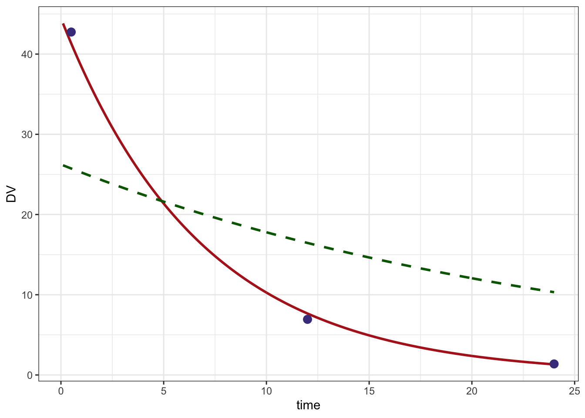

library(ggplot2)
library(mrgsolve)
library(nloptr)
library(dplyr)
library(magrittr)
options(mrgsolve.soloc="build")This is a shortened version of map_bayes.html, showing only the estimation step.
We code up a one-compartment model, with fixed TVCL and TVV. We have
ETA1 and ETA2 as parameters in the model so
that we can update them as the optimizer proceeds. Our goal is to find
the values of ETA that are most consistent with the
data.
code <- '
$SET request=""
$PARAM ETA1 = 0, ETA2 = 0
$CMT CENT
$PKMODEL ncmt=1
$MAIN
double TVCL = 1.5;
double TVVC = 23.4;
double CL = TVCL*exp(ETA1);
double V = TVVC*exp(ETA2);
$TABLE
capture DV = (CENT/V);
'
mod <- mcode_cache("map", code)We also have the OMEGA and SIGMA matrices
from the population model estimation step.
omega <- cmat(0.23,-0.78, 0.62)
omega.inv <- solve(omega)
sigma <- matrix(0.0032)Read in the data set. Notice that DV has value
NA for dosing records. When calculating the joint
likelihood of all the data, we will remove the missing values (dosing
records don’t have observations that contribute to the likelihood
value).
data <- readRDS("map_bayes_data.RDS")
head(data). # A tibble: 4 × 6
. ID time evid amt cmt DV
. <dbl> <dbl> <dbl> <dbl> <dbl> <dbl>
. 1 1 0 1 750 1 NA
. 2 1 0.5 0 0 0 42.7
. 3 1 12 0 0 0 6.93
. 4 1 24 0 0 0 1.37This function takes in a set of proposed \(\eta\)s along with the observed data vector, the data set and a model object and returns the value of the EBE objective function
When we do the estimation, the fixed effects and random effect variances are fixed.
The estimates are the \(\eta\) for clearance and volume
Arguments:
eta the current values from the optimizerycol the observed data column named the data setm the model objectdvcol the predicted data column namepred if TRUE, just return predicted
valueseta is a listeta is properly named (i.e. ETA1
and ETA2)eta into a matrix that is one rowm) with the current values of
ETA1 and ETA2d and save output to
out objectif(pred)) return
the simulated datamapbayes <- function(eta,d,ycol,m,dvcol=ycol,pred=FALSE) {
sig2 <- as.numeric(sigma)
eta <- as.list(eta)
names(eta) <- names(init)
eta_m <- eta %>% unlist %>% matrix(nrow=1)
m <- param(m,eta)
out <- mrgsim(m,data=d,output="df")
if(pred) return(out)
# http://www.ncbi.nlm.nih.gov/pmc/articles/PMC3339294/
sig2j <- out[[dvcol]]^2*sig2
sqwres <- log(sig2j) + (1/sig2j)*(d[[ycol]] - out[[dvcol]])^2
nOn <- diag(eta_m %*% omega.inv %*% t(eta_m))
return(sum(sqwres,na.rm=TRUE) + nOn)
}init <- c(ETA1=-0.3, ETA2=0.2)Fit the data
newuoa is from the nloptr packageoptim) could probably also be
usedArguments to newuoa
mapbayesfit <- nloptr::newuoa(init,mapbayes,ycol="DV",m=mod,d=data)Here are the final estimates
fit$par. [1] 0.4995400 -0.3274858A data set and model to get predictions; this will give us a smooth prediction line
pdata <- data %>% filter(evid==1)
pmod <- mod %>% update(end=24, delta=0.1) Predicted line based on final estimates
pred <- mapbayes(fit$par,ycol="DV",pdata,pmod,pred=TRUE) %>% filter(time > 0)
head(pred). ID time DV
. 1 1 0.1 43.82331
. 2 1 0.2 43.18567
. 3 1 0.3 42.55731
. 4 1 0.4 41.93809
. 5 1 0.5 41.32789
. 6 1 0.6 40.72656Predicted line based on initial estimates
initial <- mapbayes(init,ycol="DV",pdata,pmod,,pred=TRUE) %>% filter(time > 0)
head(initial). ID time DV
. 1 1 0.1 26.13954
. 2 1 0.2 26.03811
. 3 1 0.3 25.93707
. 4 1 0.4 25.83642
. 5 1 0.5 25.73616
. 6 1 0.6 25.63629Plot
ggplot() +
geom_line(data=pred, aes(time,DV),col="firebrick", lwd=1) +
geom_line(data=initial,aes(time,DV), lty=2, col="darkgreen", lwd=1) +
geom_point(data=data %>% filter(evid==0), aes(time,DV), col="darkslateblue",size=3) +
theme_bw()
mrgsolve: mrgsolve.github.io | metrum research group: metrumrg.com